Írógép - 2 500Ft+ Áfa

Bútorok
Az alábbi székeket saját készletünkből, a legkedvezőbb logisztikai megoldást megkeresve juttatjuk el, az általad megjelölt helyre. Esküvőre készülsz? Az esküvői dekoráció ékkövei lesznek, ezek az amerikai típusú bankett székek. Chiavari székeink közül kiválaszthatod az esküvőd stílusának leginkább megfelelőt. Egy terem látványvilágát egyértelműen meghatározzák a bútorok: ha stílusos székekkel várjuk vendégeinket, stílust adunk magának az eseménynek is...
Egyéb
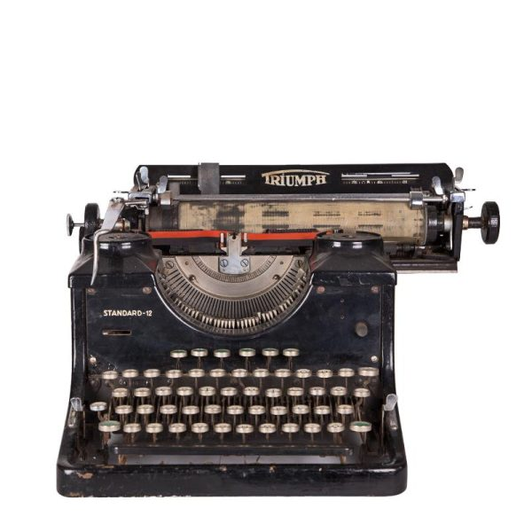
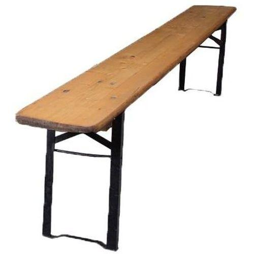
Sörpad (2 db) - 3 400Ft+ Áfa
220 cm hosszú, 25 cm széles, 50 cm magas
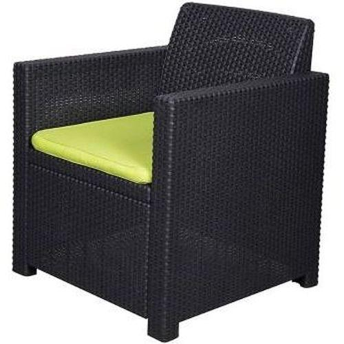
Rattan fotel sötét barna - 8 000Ft+ Áfa
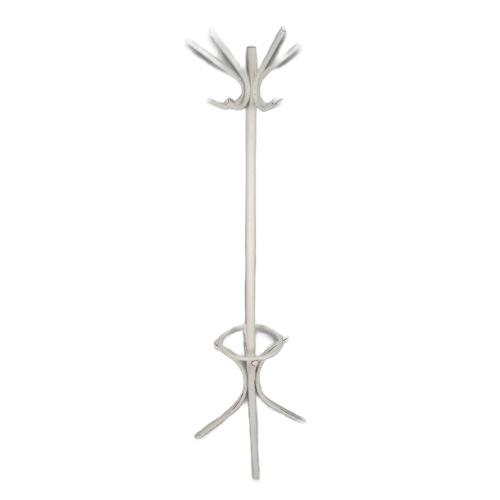
Állófogas - 3 500Ft+ Áfa
180 cm magas.
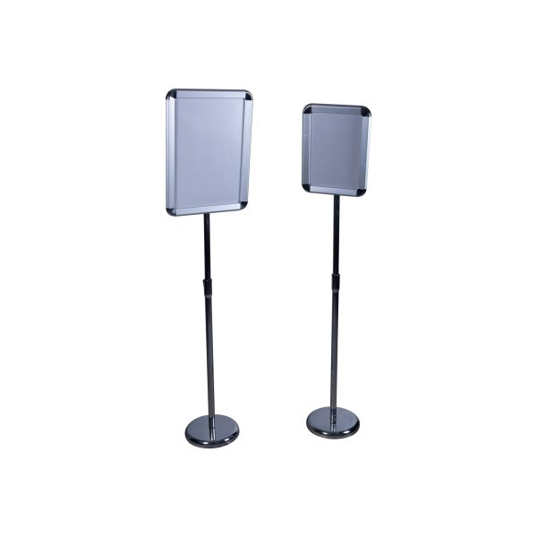
Megállító tábla A3 - 5 500Ft+ Áfa
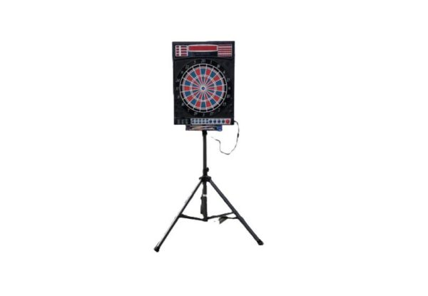
Darts - 5 000Ft+ Áfa
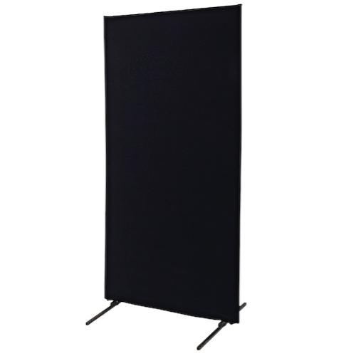
Paraván spandex huzattal 120*200 cm - 6 600Ft+ Áfa
Kizárólag cégünk paravánjaira jó a huzat.
Az anyagnak minimális a nyúlása.
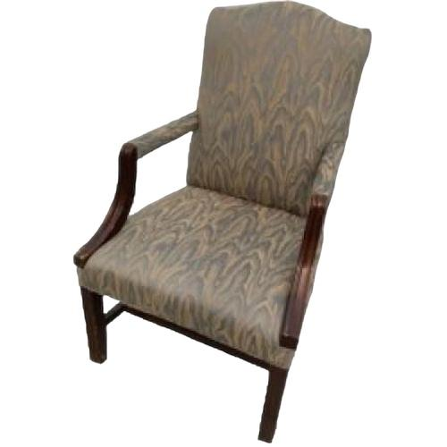
Karfás szövet fotel - 8 000Ft+ Áfa
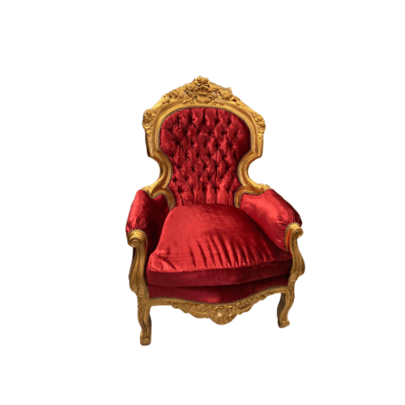
Mikulás fotel - 15 000Ft+ Áfa
A fotel méretei:
magasság: 110 cm
szélesség: 80 cm
mélység: 90 cm
ülőfelület: 57 cm
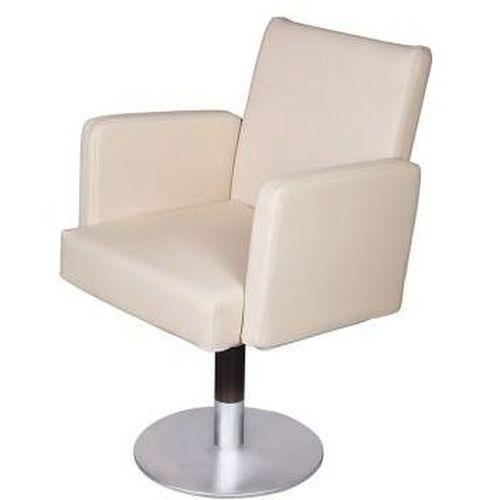
Kávéházi karfás fotel (forgó) - 3 500Ft+ Áfa
Ülőmagasság: 45 cm
Ülésmélység: 42 cm
Háttámla magasság: 39 cm
Szélesség: 58 cm
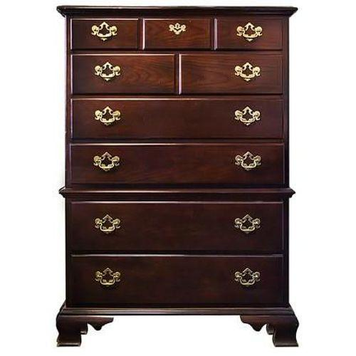
Klasszikus 6 fiókos komód - 10 000Ft+ Áfa
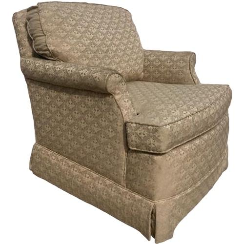
Krém színű fotel - 7 500Ft+ Áfa
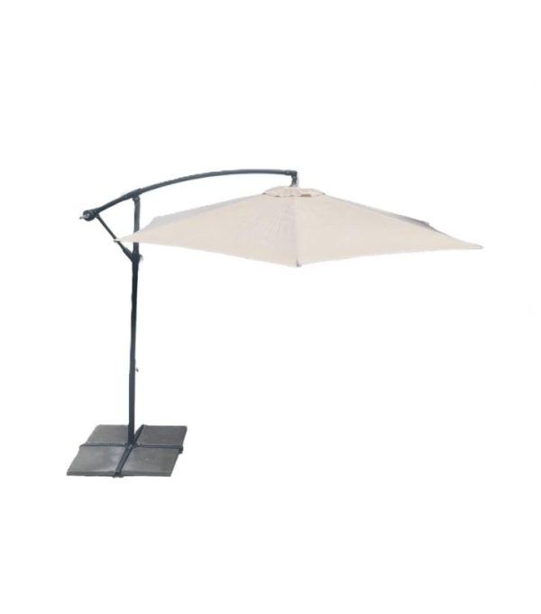
Napernyő 3 m magas bézs - 9 000Ft+ Áfa
Szélesség/magasság/mélység: 300/245/300 cm
Állítható magasság, UV-álló, Időjárásbiztos
Anyag: Textil
Szín: Bézs, Natúr Fekete váz
Befogási távolság: 300 cm
Fényvédő
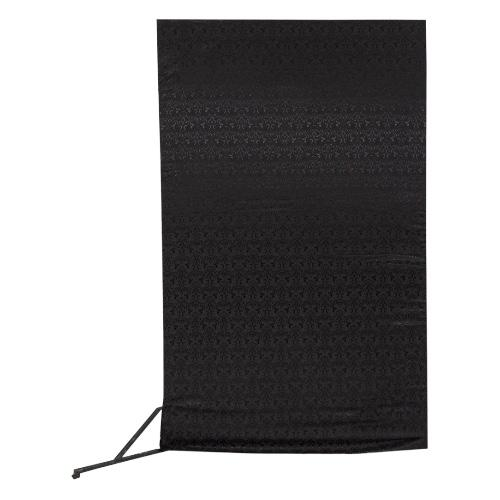
Paraván fekete mintás spandex huzattal - 6 600Ft+ Áfa
Fekete színű, önmagában nyomott exclusive mintával.
Kizárólag cégünk paravánjaira jó a huzat.
Az anyagnak minimális a nyúlása.
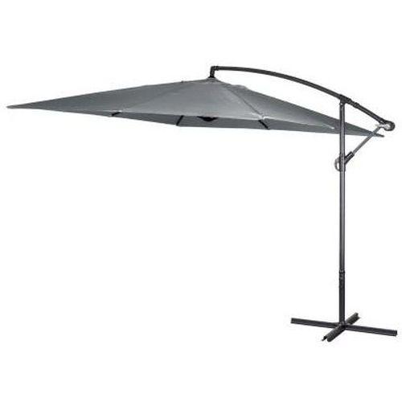
Napernyő 3 m magas antracit szürke - 9 000Ft+ Áfa
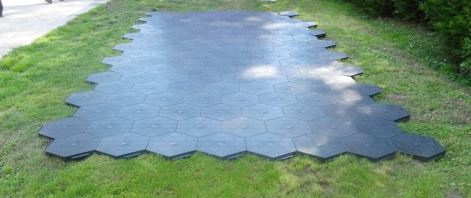
Méhsejt padozat, talajtakaró - 1 700Ft+ Áfa
1db elem mérete: 40x46x4 cm
Súlya: 1,9kg/db
1m2=7db elem
Bérlése kizárólag cégünk kollégáinak összeszerelésével történik.
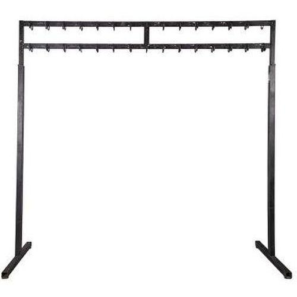
Ruhatári fogas 50 személyes - 7 500Ft+ Áfa
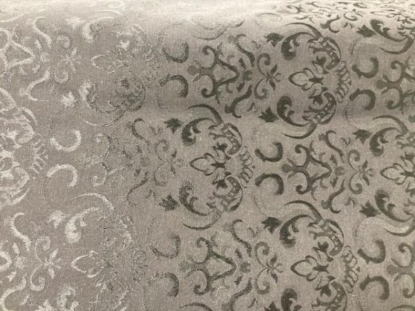
Paraván fehér mintás spandex huzattal - 6 600Ft+ Áfa
Tört fehér színű, önmagában nyomott exclusive mintával.
Kizárólag cégünk paravánjaira jó a huzat.
Az anyagnak minimális a nyúlása.
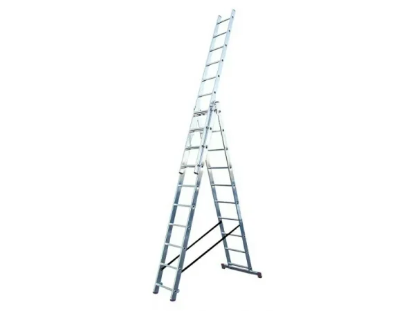
Létra 3*10 fok, 7 m, alumínium - 3 900Ft+ Áfa
Létra 3*10 fok-os (3 részes)
7 méter hosszú,
Max. terhelhetőség: 150 kg
Alumínium,
1 húzóköteles
Lépcsőfunkcióval
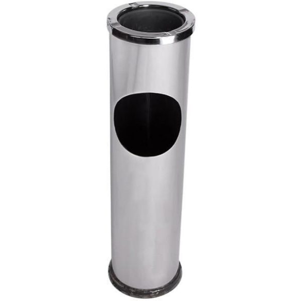
Álló hamutartó - 1 000Ft+ Áfa
Evőeszközök
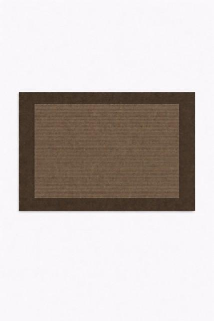
Tányéralátét (sötét barna szegéllyel) - 200Ft+ Áfa
Műanyag
30*45 cm
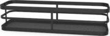
Evőeszköztartó, fekvő, fekete fém - 800Ft+ Áfa
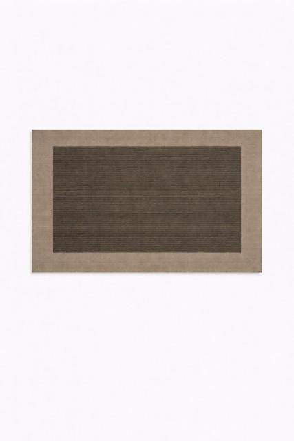
Tányéralátét (világos barna szegéllyel) - 200Ft+ Áfa
Műanyag
30*45 cm
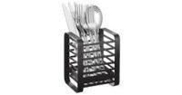
Evőeszköztartó, álló, fekete fém - 800Ft+ Áfa
Tányéralátét (sötét barna szegéllyel) - 200Ft+ Áfa
Műanyag
30*45 cm
Tányéralátét (világos barna szegéllyel) - 200Ft+ Áfa
Műanyag
30*45 cm
Evőeszköztartó, álló, fekete fém - 800Ft+ Áfa
Evőeszköztartó, fekvő, fekete fém - 800Ft+ Áfa
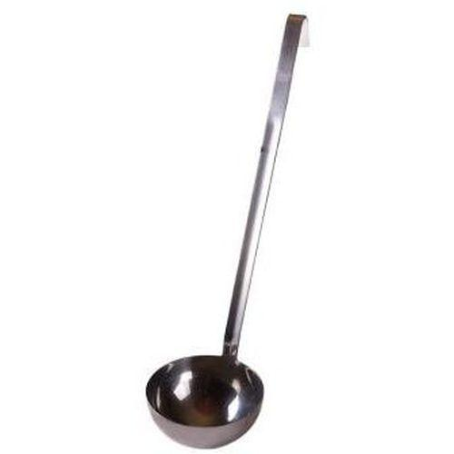
Merőkanál 0,5 l-es - 300Ft+ Áfa
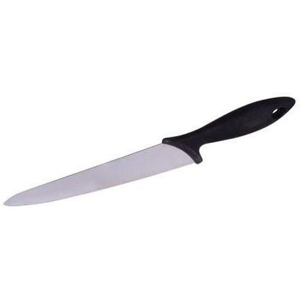
Szeletelőkés - 200Ft+ Áfa
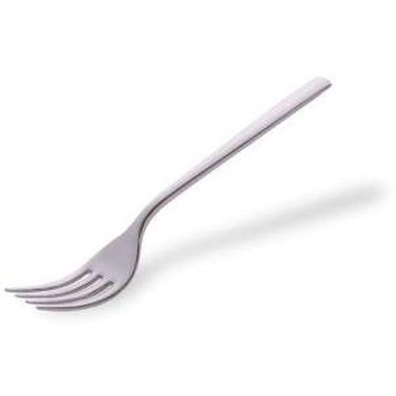
Salvinelli nagy villa - 70Ft+ Áfa

Merőkanál 3 dl-es - 200Ft+ Áfa
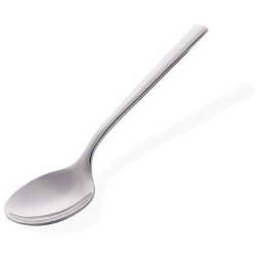
Salvinelli consumes kanál, erőleveses kanál - 70Ft+ Áfa
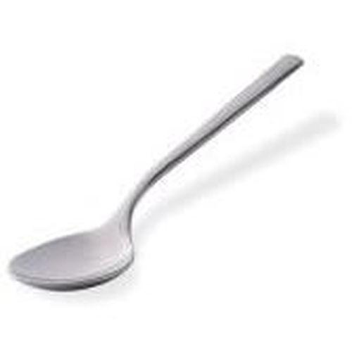
Salvinelli mokkás kanál, kávés kanál - 60Ft+ Áfa
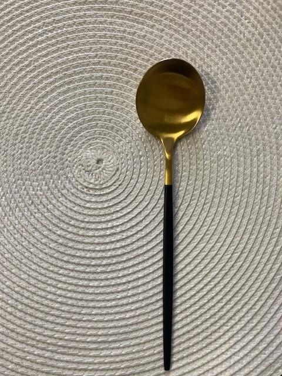
Matt arany kanál - 150Ft+ Áfa
Matt arany kanál
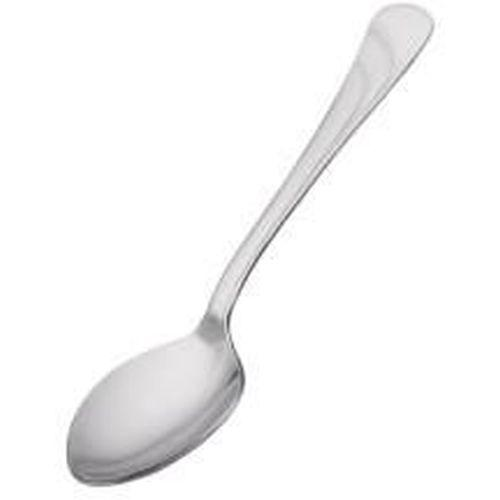
Hackman mokkás kanál, kávés kanál - 40Ft+ Áfa
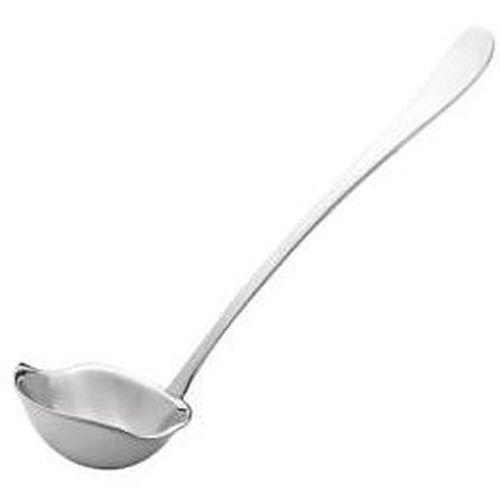
Bólés kanál - 120Ft+ Áfa
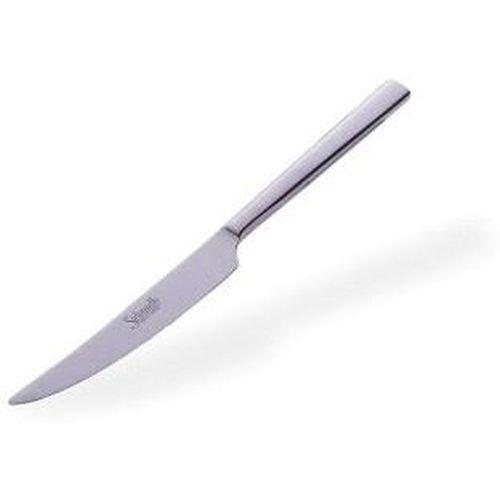
Salvinelli desszert kés - 70Ft+ Áfa
A kés mérete 21cm
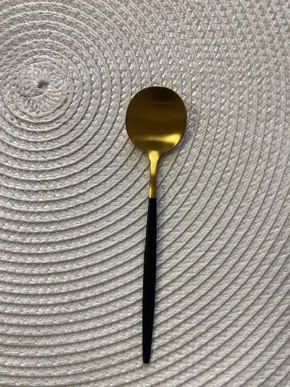
Matt arany teás kanál - 150Ft+ Áfa
Matt arany teás/desszert kanál
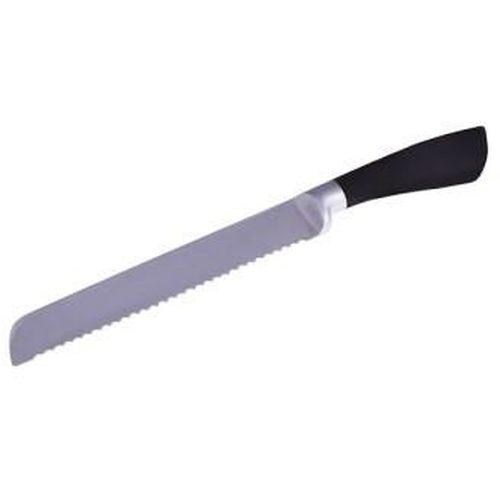
Kenyérvágó kés - 200Ft+ Áfa
Asztalok

Prémium Lounge szürke asztal kisebb - 3 000Ft+ Áfa

Boroshordó dekorasztal - 15 000Ft+ Áfa
Magasság: 110 cm
Átmérő: 78 cm

Csocsóasztal, asztali foci - 50 000Ft+ Áfa
Csocsóasztal, asztali foci
Méretei:
Szállítása speciális dobozban történik!

Klasszikus kisasztal - 3 500Ft+ Áfa
Hossz: 65 cm
Magasság: 60 cm
Szélesség: 55 cm

Sörasztal - 2 600Ft+ Áfa
250 c

Tábla asztal, bankett asztal 160*80 - 2 600Ft+ Áfa
Összecsukhat bankett asztal, tábla asztal
– 160×80 cm, 73 cm magas
– fém vázzal
– abrosz vagy spandex huzat használata ajánlott

Kültéri koktélasztal, fa 90 cm Ø - 2 200Ft+ Áfa
 90 cm
90 cm
 110 cm
110 cm
 80 cm
80 cm
Összecsukható könyöklő asztal:
– fém vázzal
– műanyag asztal lap

Koktélasztal 110 cm magas, 90 cm Ø - 2 500Ft+ Áfa
Összecsukható koktél asztal, beltérre ajánlott.
Mindenesetben szükséges hozzá a 290 körabrosz vagy a spandex használata.
Magasság: 110 cm
Átmérő: 90 cm

Boroshordó asztal - 5 000Ft+ Áfa

Klasszikus kávéházi asztal 54 cm Ø, 70 cm magas - 3 500Ft+ Áfa

Eiffel koktélasztal, 70 cm - 3 000Ft+ Áfa
Eiffel koktélasztal.
Elegáns, Párizst idéző design-nal.

Prémium Lounge szürke asztal nagyobb - 5 000Ft+ Áfa

Rattan kültéri dohányzó asztal sötét barna - 3 000Ft+ Áfa

Boroshordó garnitúra 2 db fotel, 1 db asztal - 20 000Ft+ Áfa

Boroshordó könyöklő asztal - 6 000Ft+ Áfa

Klasszikus ovális étkezőasztal 6 személyes - 12 000Ft+ Áfa

Kültéri koktélasztal, műanyag 80 cm Ø - 2 200Ft+ Áfa

Kültéri asztal, szürke színű 65 cm Ø - 3 000Ft+ Áfa
Kültéri kerti asztal , szürke színű
65 cm Ø kerek asztallap,
71 cm magas
49 cm a lábak szélessége

Kávéházi garnitúra, 4db vajbőr fotel 1db asztal - 15 000Ft+ Áfa

Klasszikus lerakó asztal - 4 800Ft+ Áfa
Méretei: szé: 140cm, mé: 40cm, ma: 69cm
Tálak és Tálcák
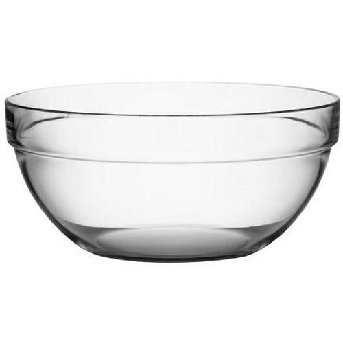
Salátás tál üveg 29 cm Ø - 300Ft+ Áfa
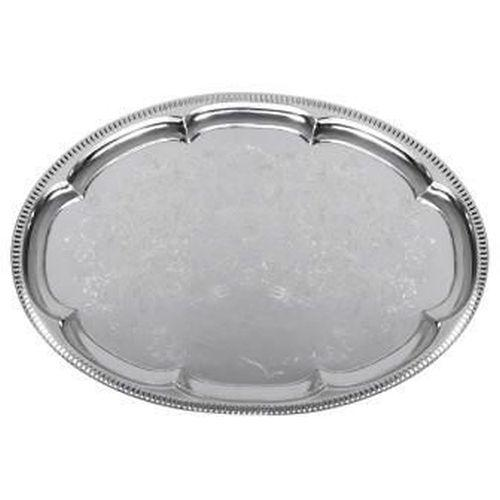
Süteményes tálca ovális - 300Ft+ Áfa
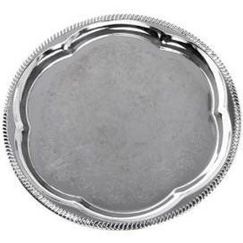
Süteményes tálca kerek 35,5 cm - 300Ft+ Áfa
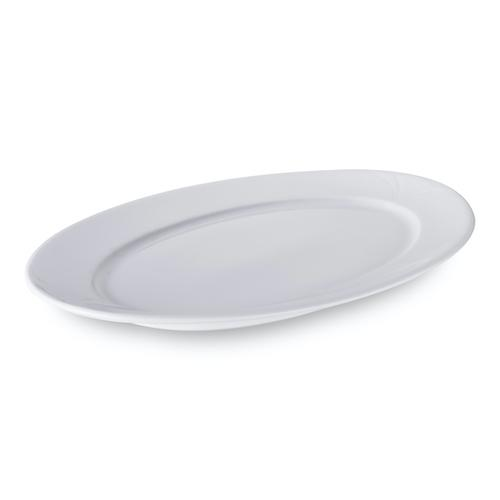
Sültes tál (4 személyes) ovális porcelán 39*25 cm - 550Ft+ Áfa
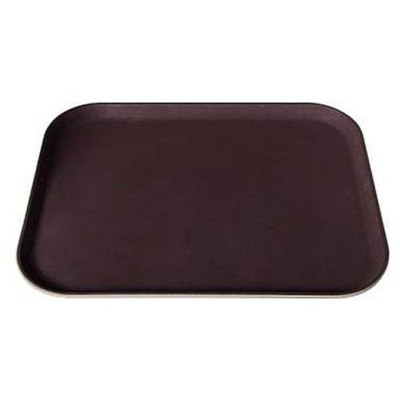
Csúszásmentes felszolgáló tálca - 500Ft+ Áfa
36*46 cm.
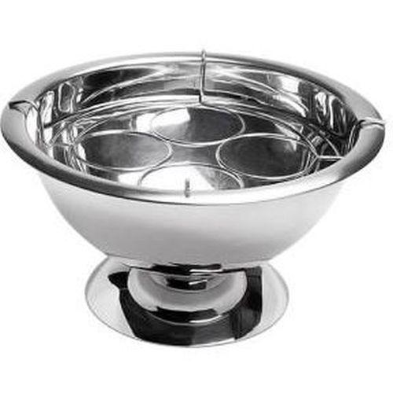
Pezsgőhűtő tál - 1 000Ft+ Áfa
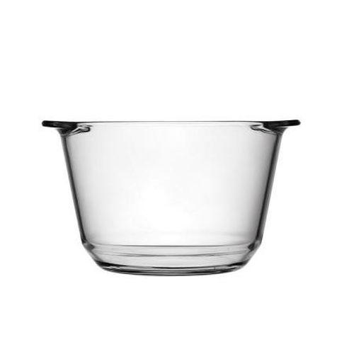
Leveses tál, üveg (4 személyes) 2,6 l-es - 700Ft+ Áfa
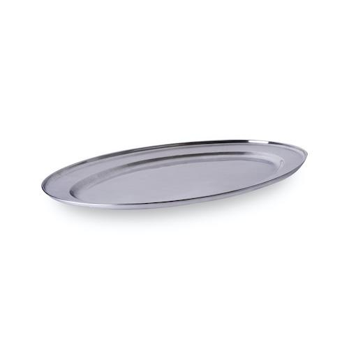
Sültes tál (10 személyes) ovális fém, 41×60 cm - 750Ft+ Áfa
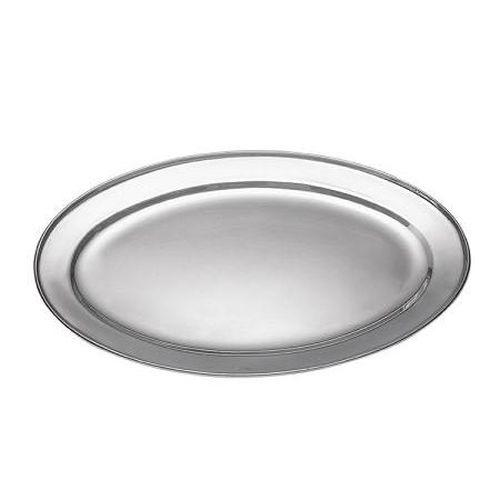
Sültes tál (8 személyes) ovális fém 34×50 cm - 650Ft+ Áfa
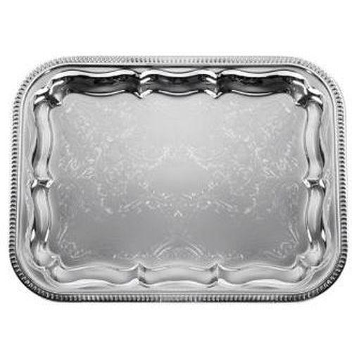
Süteményes tálca szögletes 40 cm - 300Ft+ Áfa
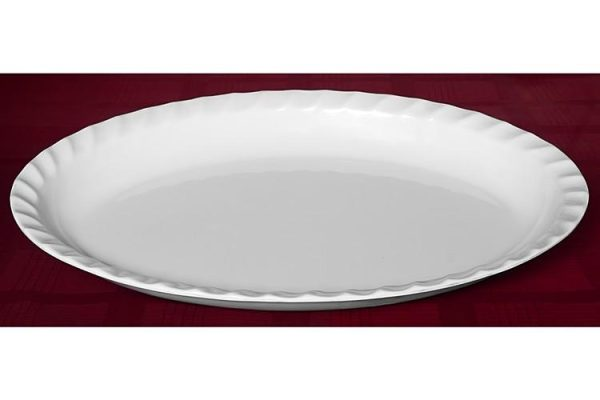
Sültes tál (8 személyes) porcelán hatású műanyag ovális 31×48 cm - 550Ft+ Áfa
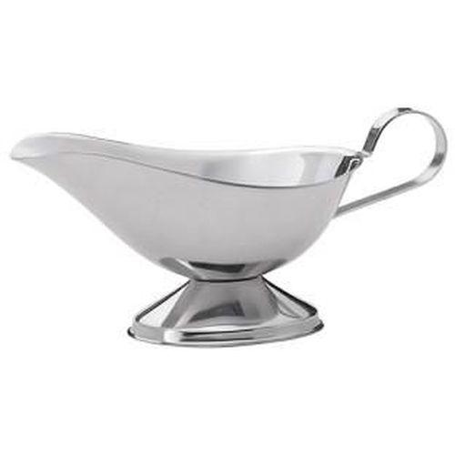
Mártásos tál - 200Ft+ Áfa
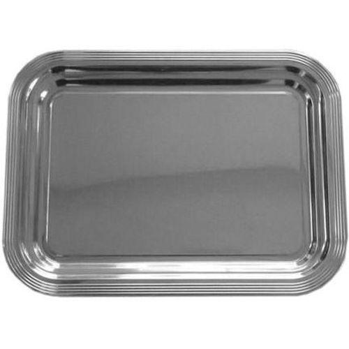
Süteményes /sültes króm tálca 41×31 cm - 500Ft+ Áfa
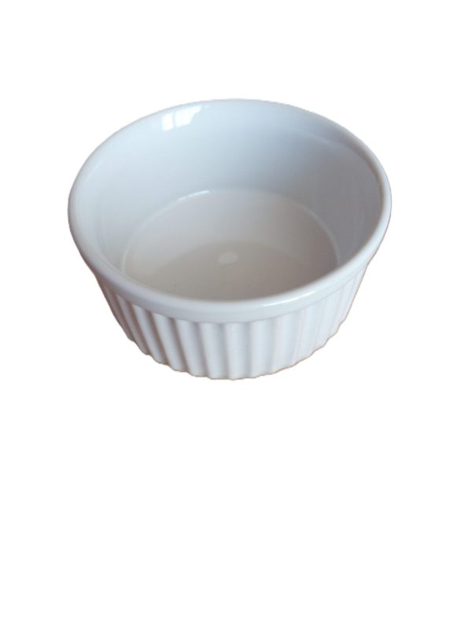
Szuflés tálka porcelán - 150Ft+ Áfa
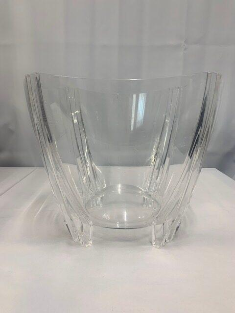
Pezsgőhűtő tál, műanyag - 400Ft+ Áfa
Átlátszó műanyag pezsgőhűtő tál, 3-4 üveg tárolására.
Salátás tál üveg 23 cm Ø - 300Ft+ Áfa
Alföldi leveses tál, porcelán - 700Ft+ Áfa
Alföldi leveses tál, porcelán
2,2 L
Salátás tál (porcelán) 23 cm - 550Ft+ Áfa

Salátás tál üveg 26 cm Ø - 300Ft+ Áfa
Puncs tál - 1 000Ft+ Áfa
Székek

Chiavari szék, Ragyogó fehér - Az igazi klasszikus, mely minden környezetben tökéletesen megállja a helyét. Nem hivalkodó, mégis nagyon elegáns eszköze a terem berendezésének - vele nem hibázhatsz. Kitűnő alapja bármilyen díszítésnek, kedvedre választhatsz hozzá kiegészítőket.

Chiavari szék, Antikolt fa - Vintage stílusú dekorációt nehéz elképzelni nélküle, nem véletlenül ő Amerika egyik nagy kedvence. Rendkívül stílusos, hisz egészen természetesen és finoman hozza azt az ódon hangulatot, amit egy ilyen kopottas darabtól elvárhatunk. Valódi fa, valódi kopások - ő ilyen őszinte fajta.

Chiavari szék, Arany - Ő az arany székünk, de amolyan elegáns arany, mint egy pohár fényesen csillanó pezsgő. Arisztokratikus környezetben is otthonosan mozog, de barátságos hangulatban fogadja vendégeid akár egy fapadlós sátorban is. A fehér után ő a második legnépszerűbb székünk - ez nem véletlen.

Chiavari szék, Átlátszó - Szívem csücske, kollekciónk legizgalmasabb darabja az átlátszó szék. Elképesztően légiessé teszi a berendezést - még egy agyonzsúfolt terem is szellősnek tűnik vele. Ő egy igazi különlegesség, nem lehet nem észrevenni. Egy kis dekorációs világítás pörgeti be csak igazán!

Amerikai szertartás szék - Ez az alapvetően egyszerűnek tűnő kis darab, nagyon csinosan mutat a szabadtéri ceremóniáknál, vagy a természet lágy ölére megterített ebédnél is. Stabil fa szerkezetét fehér kárpit teszi kényelmessé, gyepen is jól használható, nem nagyon süllyed el. Különféle katonás vagy ívelt sorokba rendezve nagyon szépen tölti be a teret.
Kerti szék, rattan szék - 1 320Ft+ Áfa
 72 cm
72 cm
 41 cm
41 cm
 51 cm
51 cm
 51 cm
51 cm
Műanyag kerti szék, Flair szék - 350Ft+ Áfa
Fém hordó nagy szék - 1 200Ft+ Áfa
Átmérő: 40 cm
Magasság: 62 cm
Pulpitus, szószék - 8 500Ft+ Áfa
Elegáns pulpitus, a
Bárszék - 1 800Ft+ Áfa
Láb magasság: 80 cm
Ülő mélység: 36 cm
Szélesség: 37 cm
Háttámla magasság: 30 cm
Bankett szék, konferencia szék, magas támlás - 420Ft+ Áfa
Arany színű fém váz, bordó kárpittal
ülőrész 40*37,5
háttámla 51,5 cm magas
lábmagasság 37.5 cm
A fém váz kopott, így székhuzattal ajánljuk bérelni.
Fém hordó kis szék - 800Ft+ Áfa
Átmérő: 33 cm
Magasság: 37 cm
Klasszikus étkezőasztali szék, bézs huzattal, karfa nélküli - 1 800Ft+ Áfa
Kérhető bézs színű és fehér színű üléshuzattal is.
Magasság: 104 cm
Láb magasság: 40 cm
Háttámla magasság: 65 cm
Ülés: 46*44 cm
Etetőszék - 2 000Ft+ Áfa
Fehér etetőszék, fém lábakkal
Eiffel bárszék fekete ülőkével - 2 300Ft+ Áfa
Eiffel bárszék fekete ülőkével.
Elegáns, Párizst idéző design-nal.
Eiffel pulpitus, szószék - 10 000Ft+ Áfa
Eiffel pulpitus, szószék.
Elegáns, Párizst idéző design-nal.
Bankett szék, konferencia szék, alacsony támlás - 420Ft+ Áfa
Fekete színű fém váz, bordó kárpittal
Kovácsoltvas szék, kávéházi szék 82 cm - 1 000Ft+ Áfa
Fém hordó kis szék - 800Ft+ Áfa
Átmérő: 33 cm
Magasság: 37 cm
Bárszék - 1 800Ft+ Áfa
Láb magasság: 80 cm
Ülő mélység: 36 cm
Szélesség: 37 cm
Háttámla magasság: 30 cm
Eiffel pulpitus, szószék - 10 000Ft+ Áfa
Eiffel pulpitus, szószék.
Elegáns, Párizst idéző design-nal.
Kovácsoltvas szék, kávéházi szék 82 cm - 1 000Ft+ Áfa
Eiffel bárszék fekete ülőkével - 2 300Ft+ Áfa
Eiffel bárszék fekete ülőkével.
Elegáns, Párizst idéző design-nal.
Fém hordó nagy szék - 1 200Ft+ Áfa
Átmérő: 40 cm
Magasság: 62 cm
Pulpitus, szószék - 8 500Ft+ Áfa
Elegáns pulpitus, a
Büfé állványok
Szemeteszsák tartó állvány - 2 000Ft+ Áfa
Szemeteszsák tartó állvány - 2 000Ft+ Áfa
Két emeletes kínáló állvány pala lapokkal, 45*6*31 cm - 2 500Ft+ Áfa
Kínáló állvány, cukorka kínáló - 1 000Ft+ Áfa
Fém gyümölcsös, süteményes állvány 3 emeletes 50 cm - 2 000Ft+ Áfa
Magassága: 80 cm
3 emeletes.
átmérők: felső kör átmérője 23 cm
belső kör átmérője 29 cm
alsó kör átmérője 36 cm
Fém gyümölcsös, süteményes állvány 3 emeletes 34 cm - 1 700Ft+ Áfa
Két emeletes kínáló állvány, bambusz 45x6x31 cm - 1 500Ft+ Áfa
Tortaállvány 3 emeletes fekete - 2 500Ft+ Áfa
45 cm magas.
Alsó emelet 29*29 cm
Középső 25*25 cm
Felső 20*20 cm
Fém mintázott gyümölcsös, süteményes állvány 3 emeletes - 2 000Ft+ Áfa
Sonka állvány - 1 000Ft+ Áfa
Tortakiemelő tortaállvány fém - 1 200Ft+ Áfa
méretei:
– magassága: 15 cm
– átmérője: 33 cm
Tortakiemelő fekete - 1 200Ft+ Áfa
méretei:
Magassága: 10 cm
Pezsgőhűtő állvány, pezsgős vödörállvány - 1 000Ft+ Áfa
Tortaállvány 2 emeletes fekete - 1 800Ft+ Áfa
33 cm magas.
Tortakiemelő tortaállvány fém - 1 200Ft+ Áfa
méretei:
– magassága: 15 cm
– átmérője: 33 cm
Fém mintázott gyümölcsös, süteményes állvány 3 emeletes - 2 000Ft+ Áfa
Sonka állvány - 1 000Ft+ Áfa
Két emeletes kínáló állvány pala lapokkal, 45*6*31 cm - 2 500Ft+ Áfa
Tortaállvány 3 emeletes fekete - 2 500Ft+ Áfa
45 cm magas.
Alsó emelet 29*29 cm
Középső 25*25 cm
Felső 20*20 cm
Pezsgőhűtő állvány, pezsgős vödörállvány - 1 000Ft+ Áfa
Láda és Tárolók

Kis méretű láda vintage szekrényhez - 500Ft+ Áfa
Az ár 1db ládára érvényes!
30*22*12 cm

Közepes méretű láda vintage szekrényhez - 800Ft+ Áfa
Az ár 1db ládára érvényes!
40*31*25 cm

Nagy méretű láda vintage szekrényhez - 1 000Ft+ Áfa
Az ár 1db ládára érvényes!
60*39*26 cm
Klasszikus szekrény - 15 000Ft+ Áfa
Magasság: 203 cm
Szélesség: 55 cm
Hossz: 96 cm
Klasszikus szekrény - 15 000Ft+ Áfa
Magasság: 203 cm
Szélesség: 55 cm
Hossz: 96 cm
Közepes méretű láda vintage szekrényhez - 800Ft+ Áfa
Az ár 1db ládára érvényes!
40*31*25 cm
Kis méretű láda vintage szekrényhez - 500Ft+ Áfa
Az ár 1db ládára érvényes!
30*22*12 cm
Nagy méretű láda vintage szekrényhez - 1 000Ft+ Áfa
Az ár 1db ládára érvényes!
60*39*26 cm
Kis méretű láda vintage szekrényhez - 500Ft+ Áfa
Az ár 1db ládára érvényes!
30*22*12 cm
Közepes méretű láda vintage szekrényhez - 800Ft+ Áfa
Az ár 1db ládára érvényes!
40*31*25 cm

Vintage postaláda - 4 000Ft+ Áfa
( a virág nem tartozéka, csak dekoráció, illustráció)
Nagy méretű láda vintage szekrényhez - 1 000Ft+ Áfa
Az ár 1db ládára érvényes!
60*39*26 cm

Fagyasztó láda 400 l-es - 20 000Ft+ Áfa
Méretei:
Mélység: 62cm
Szélesség: 132 cm
Magasság: 84 cm
Fagyasztó láda 300 l-es - 20 000Ft+ Áfa
Méretek: 110sz x 87ma x 66,5mé (cm)
Hűtőszekrény 120 l-es, pult alatti - 12 000Ft+ Áfa
Méretei:
szélesség: 55 cm
Mélység: 60 cm
Magasság: 85 cm
Csak háttérhűtő, eladótérben nem ajánlott kirakni. A kép csak illusztráció.
Tejes láda, húsos láda - 250Ft+ Áfa
Hűtőszekrény 120 l-es üvegajtós - 15 000Ft+ Áfa
120 L-es
Üvegajtós hűtő.
Méretei:
85 cm magas
54 cm széles
60 cm mély
Termo láda 6*GN 1/1 - 10 000Ft+ Áfa
Hűtőszekrény 90 l-es, pult alatti - 10 000Ft+ Áfa


Praktikus kis hűtőnk igazán jó választás, ha kevés hely áll rendelkezésre.
Méretek:
Magasság 82 cm
Mélység: 55 cm
Szélesség: 5
Melegentartó szekrény 1 ajtós, 220 V-os - 25 000Ft+ Áfa
Melegentartó szekrény 1 ajtós,
220V-os, 40 C-fokon tud fűteni maximum.
Chafingek
Köretes chafing - 4 500Ft+ Áfa
Prémium indukciós chafing, hidraulikus tetővel - 10 000Ft+ Áfa
Indukciós melegítővel működik, azzal együtt bérelhető!
Forró víz melegentartó 5,5 l - 1 500Ft+ Áfa
Chafing elektromos roll-top - 7 000Ft+ Áfa
Elektromos melegítővel működik, azzal együtt bérelhető!
Elektromos chafing 2,2 W - 4 500Ft+ Áfa
Leveses chafing elektromos, 10 l Fekete színű - 3 000Ft+ Áfa
Chafing 2 üres pasztatartóval - 3 500Ft+ Áfa
A chafing kizárólag pasztával működik.
Használatához elengedhetetlen, hogy vízzel legyen feltöltve a medencéje és abba helyezzék bele a betéteket.
Leveses chafing elektromos, 10 l-es Ezüst színű - 3 000Ft+ Áfa
Leveses átalakító chafinghez - 2 700Ft+ Áfa
Az ár kizárólag a leves átalakítót tartalmazza 2 db leves badellával.
A badellák 4L-ek
A feltüntetett ár paszta nélkül értendő. A chafing és a paszta további felárral rendelhető.
Chafing 2 üres pasztatartóval - 3 500Ft+ Áfa
A chafing kizárólag pasztával működik.
Használatához elengedhetetlen, hogy vízzel legyen feltöltve a medencéje és abba helyezzék bele a betéteket.
Köretes chafing - 4 500Ft+ Áfa
Leveses chafing elektromos, 10 l-es Ezüst színű - 3 000Ft+ Áfa
Elektromos chafing 2,2 W - 4 500Ft+ Áfa
Leveses átalakító chafinghez - 2 700Ft+ Áfa
Az ár kizárólag a leves átalakítót tartalmazza 2 db leves badellával.
A badellák 4L-ek
A feltüntetett ár paszta nélkül értendő. A chafing és a paszta további felárral rendelhető.
Chafing elektromos roll-top - 7 000Ft+ Áfa
Elektromos melegítővel működik, azzal együtt bérelhető!
Prémium indukciós chafing, hidraulikus tetővel - 10 000Ft+ Áfa
Indukciós melegítővel működik, azzal együtt bérelhető!
Leveses chafing elektromos, 10 l Fekete színű - 3 000Ft+ Áfa
Forró víz melegentartó 5,5 l - 1 500Ft+ Áfa
1/2-es chafing betét, 6 cm mély - 380Ft+ Áfa
1/3-es chafing betét, 10 cm mély (8*32,5*10 cm) - 300Ft+ Áfa
Vintage bútorok
Vintage fehér kredenc - 10 000Ft+ Áfa
Az ár nem tartalmazza a dekorációt.
Vintage hokedli szürke - 1 500Ft+ Áfa
Fehér Vintage evőeszköztartó - 1 000Ft+ Áfa
Vintage bordó kredenc - 20 000Ft+ Áfa
Magasság: 130 cm
Hossz: 125 cm
Szélesség: 60 cm
Vintage hokedli barna fehér - 1 500Ft+ Áfa
VINTAGE ezüst gyertyatartó (1 méter ) - 5 000Ft+ Áfa
VINTAGE ezüst gyertyatartó (1 méter ) - 5 000Ft+ Áfa
Vintage bordó kredenc - 20 000Ft+ Áfa
Magasság: 130 cm
Hossz: 125 cm
Szélesség: 60 cm
Vintage hokedli szürke - 1 500Ft+ Áfa
Fehér Vintage evőeszköztartó - 1 000Ft+ Áfa
Vintage hokedli barna fehér - 1 500Ft+ Áfa
Vintage fehér kredenc - 10 000Ft+ Áfa
Az ár nem tartalmazza a dekorációt.
VINTAGE ezüst gyertyatartó (1 méter ) - 5 000Ft+ Áfa
Vintage váza zsákvászonnal - 250Ft+ Áfa
Fehér Vintage evőeszköztartó - 1 000Ft+ Áfa
VINTAGE ezüst gyertyatartó (1 méter ) - 5 000Ft+ Áfa
VINTAGE ezüst gyertyatartó (1 méter ) - 5 000Ft+ Áfa
Vintage váza zsákvászonnal - 250Ft+ Áfa
Fehér Vintage evőeszköztartó - 1 000Ft+ Áfa
VINTAGE ezüst gyertyatartó (1 méter ) - 5 000Ft+ Áfa
Kanapék
Kanapé 3 személyes szürke színű - 13 000Ft+ Áfa
3 Személyes Mintás kanapé - 15 000Ft+ Áfa
Prémium Lounge szürke kanapé 3 személyes - 20 000Ft+ Áfa
- terhelés kb.: 360 kg
- ülésmélység kb.: 68 cm
- szélesség kb.: 227 cm
- magasság kb.: 57 cm
- mélység kb.: 88 cm
Kanapé 2 személyes, mustár színű - 14 000Ft+ Áfa
Hossz: 190 cm
Magasság: 95 cm
Szélesség: 90 cm
Ülés: 160*55 cm
Kanapé 3 személyes fehér színű - 12 500Ft+ Áfa
Rattan kanapé sötét barna - 16 000Ft+ Áfa
Kanapé 3 személyes fehér színű - 12 500Ft+ Áfa
Kanapé 3 személyes szürke színű - 13 000Ft+ Áfa
3 Személyes Mintás kanapé - 15 000Ft+ Áfa
Kanapé 2 személyes, mustár színű - 14 000Ft+ Áfa
Hossz: 190 cm
Magasság: 95 cm
Szélesség: 90 cm
Ülés: 160*55 cm
Rattan kanapé sötét barna - 16 000Ft+ Áfa
Prémium Lounge szürke kanapé 3 személyes - 20 000Ft+ Áfa
- terhelés kb.: 360 kg
- ülésmélység kb.: 68 cm
- szélesség kb.: 227 cm
- magasság kb.: 57 cm
- mélység kb.: 88 cm
Kanapé 3 személyes fehér színű - 12 500Ft+ Áfa
Kanapé 3 személyes szürke színű - 13 000Ft+ Áfa
3 Személyes Mintás kanapé - 15 000Ft+ Áfa
Prémium Lounge szürke kanapé 3 személyes - 20 000Ft+ Áfa
- terhelés kb.: 360 kg
- ülésmélység kb.: 68 cm
- szélesség kb.: 227 cm
- magasság kb.: 57 cm
- mélység kb.: 88 cm
Rattan kanapé sötét barna - 16 000Ft+ Áfa
Kanapé 2 személyes, mustár színű - 14 000Ft+ Áfa
Hossz: 190 cm
Magasság: 95 cm
Szélesség: 90 cm
Ülés: 160*55 cm
Garnitúrák
Rattan ülőgarnitúra, kerti garnitúra sötét barna - 38 000Ft+ Áfa
Kovácsoltvas kávéházi garnitúra - 6 500Ft+ Áfa
Klasszikus étkezőgarnitúra - 22 000Ft+ Áfa
Sörpad garnitúra - 3 400Ft+ Áfa
asztal: 220 cm hosszú, 50 cm széles, 75 cm magas
pad: 220 cm hosszú, 25 cm széles, 50 cm magas
Kovácsoltvas kávéházi garnitúra - 6 500Ft+ Áfa
Sörpad garnitúra - 3 400Ft+ Áfa
asztal: 220 cm hosszú, 50 cm széles, 75 cm magas
pad: 220 cm hosszú, 25 cm széles, 50 cm magas
Klasszikus étkezőgarnitúra - 22 000Ft+ Áfa
Kovácsoltvas kávéházi garnitúra - 6 500Ft+ Áfa
Rattan ülőgarnitúra, kerti garnitúra sötét barna - 38 000Ft+ Áfa
Klasszikus étkezőgarnitúra - 22 000Ft+ Áfa
Rattan ülőgarnitúra, kerti garnitúra sötét barna - 38 000Ft+ Áfa
Sörpad garnitúra - 3 400Ft+ Áfa
asztal: 220 cm hosszú, 50 cm széles, 75 cm magas
pad: 220 cm hosszú, 25 cm széles, 50 cm magas
Rattan ülőgarnitúra, kerti garnitúra sötét barna - 38 000Ft+ Áfa
Sörpad garnitúra - 3 400Ft+ Áfa
asztal: 220 cm hosszú, 50 cm széles, 75 cm magas
pad: 220 cm hosszú, 25 cm széles, 50 cm magas
Rattan ülőgarnitúra, kerti garnitúra sötét barna - 38 000Ft+ Áfa
Sörpadgarnitúra huzat - 3 600Ft+ Áfa
Sörpadgarnitúra huzat - 3 600Ft+ Áfa
Textíliák
Fekete textilbőr fotel 1 személyes - 8 000Ft+ Áfa
Magasság: 60 cm
Ülés: 68*70 cm
Háttámla magasság: 30 cm
Szélesség: 84 cm
Hossz: 83 cm
Fekete textilbőr fotel 1 személyes - 8 000Ft+ Áfa
Magasság: 60 cm
Ülés: 68*70 cm
Háttámla magasság: 30 cm
Szélesség: 84 cm
Hossz: 83 cm
Fekete textilbőr fotel 1 személyes - 8 000Ft+ Áfa
Magasság: 60 cm
Ülés: 68*70 cm
Háttámla magasság: 30 cm
Szélesség: 84 cm
Hossz: 83 cm
Kenyérkosár, fém, fekete textillel - 500Ft+ Áfa
Szalvétatartó kültéri, inox - 500Ft+ Áfa
Fém kenyérkosár, barna kockás textillel - 500Ft+ Áfa
Szalvétatartó, fekete, fém - 500Ft+ Áfa
Szalvétatartó, fekete, fém - 500Ft+ Áfa
Szalvétatartó kültéri, inox - 500Ft+ Áfa
Fém kenyérkosár, barna kockás textillel - 500Ft+ Áfa
Kenyérkosár, fém, fekete textillel - 500Ft+ Áfa
Textilszalvéta fehér - 300Ft+ Áfa
Textilszalvéta méz - 350Ft+ Áfa
Textilszalvéta exclusive burgundi - 400Ft+ Áfa
Prémium minőségű, burgundi színű textil szalvéta exclusive, hullámos széllel.
Textilszalvéta méz - 350Ft+ Áfa
Textilszalvéta exclusive burgundi - 400Ft+ Áfa
Prémium minőségű, burgundi színű textil szalvéta exclusive, hullámos széllel.
Textilszalvéta fehér - 300Ft+ Áfa
Lounge bútorok
Prémium Lounge fotel 1 személyes - 11 000Ft+ Áfa
- terhelés kb.: 120 kg
- szélesség kb.: 113 cm
- magasság kb.: 57 cm
- mélység kb.: 88 cm
- *ülésmagasság kb.: 41,5 cm
Prémium Lounge szürke garnitúra 4 db-os - 48 000Ft+ Áfa
Az ár tartalmazza: 1db 3 személyes kanapé
2db fotel
1db kisasztal
Prémium Lounge szürke garnitúra 4 db-os - 48 000Ft+ Áfa
Az ár tartalmazza: 1db 3 személyes kanapé
2db fotel
1db kisasztal
Prémium Lounge fotel 1 személyes - 11 000Ft+ Áfa
- terhelés kb.: 120 kg
- szélesség kb.: 113 cm
- magasság kb.: 57 cm
- mélység kb.: 88 cm
- *ülésmagasság kb.: 41,5 cm
Prémium Lounge szürke garnitúra 4 db-os - 48 000Ft+ Áfa
Az ár tartalmazza: 1db 3 személyes kanapé
2db fotel
1db kisasztal
Prémium Lounge szürke garnitúra 4 db-os - 48 000Ft+ Áfa
Az ár tartalmazza: 1db 3 személyes kanapé
2db fotel
1db kisasztal
Prémium Lounge fotel 1 személyes - 11 000Ft+ Áfa
- terhelés kb.: 120 kg
- szélesség kb.: 113 cm
- magasság kb.: 57 cm
- mélység kb.: 88 cm
- *ülésmagasság kb.: 41,5 cm
Prémium Lounge szürke garnitúra 4 db-os - 48 000Ft+ Áfa
Az ár tartalmazza: 1db 3 személyes kanapé
2db fotel
1db kisasztal
Prémium Lounge szürke garnitúra 4 db-os - 48 000Ft+ Áfa
Az ár tartalmazza: 1db 3 személyes kanapé
2db fotel
1db kisasztal
Kordonok
Kordon kötél 1,5 m, bordó színű - 600Ft+ Áfa
Az ár 1db KÖTÉL-re vonatkozik, a kordon lábat nem tartalmazza
Kordon kötél:
– hossza 1,5 méter
– bordó színű
Kovácsoltvas kordon - 4 000Ft+ Áfa
Szalagos kordon, szalagkordon 1,5 m - 4 000Ft+ Áfa
Kovácsoltvas kordon - 4 000Ft+ Áfa
Szalagos kordon, szalagkordon 1,5 m - 4 000Ft+ Áfa
Kordon kötél 1,5 m, bordó színű - 600Ft+ Áfa
Az ár 1db KÖTÉL-re vonatkozik, a kordon lábat nem tartalmazza
Kordon kötél:
– hossza 1,5 méter
– bordó színű
Napozóágyak
Napozóágy, napágy - 7 200Ft+ Áfa
Napozóágy:
szürke, fém keret
választható színek:
fekete színű
bézs színű
Maximum terhelhetősége 90 kg-ig!
Napozóágy, napágy - 7 200Ft+ Áfa
Napozóágy:
szürke, fém keret
választható színek:
fekete színű
bézs színű
Maximum terhelhetősége 90 kg-ig!
Napozóágy, napágy - 7 200Ft+ Áfa
Napozóágy:
szürke, fém keret
választható színek:
fekete színű
bézs színű
Maximum terhelhetősége 90 kg-ig!
Napozóágy, napágy - 7 200Ft+ Áfa
Napozóágy:
szürke, fém keret
választható színek:
fekete színű
bézs színű
Maximum terhelhetősége 90 kg-ig!
Tükrök
Tükör álló - 3 000Ft+ Áfa
Magasság: 160 cm
Szélesség: 40 cm
Tükör álló - 3 000Ft+ Áfa
Magasság: 160 cm
Szélesség: 40 cm
Tükörtál+rekesz - 700Ft+ Áfa
Tükörtál+rekesz - 700Ft+ Áfa
Sátrak
Sátor Prémium 3*3 m - 25 000Ft+ Áfa
Sátor Prémium 6*3 m - 30 000Ft+ Áfa
Sátor Prémium 6*3 m - 30 000Ft+ Áfa
Sátor Prémium 3*3 m - 25 000Ft+ Áfa
Babzsákok
Babzsákfotel - 3 000Ft+ Áfa
500*500 cm
Babzsákfotel - 3 000Ft+ Áfa
500*500 cm
Babzsákfotel - 3 000Ft+ Áfa
500*500 cm
Világítás
Reflektor LED - 1 500Ft+ Áfa
Reflektor LED - 1 500Ft+ Áfa